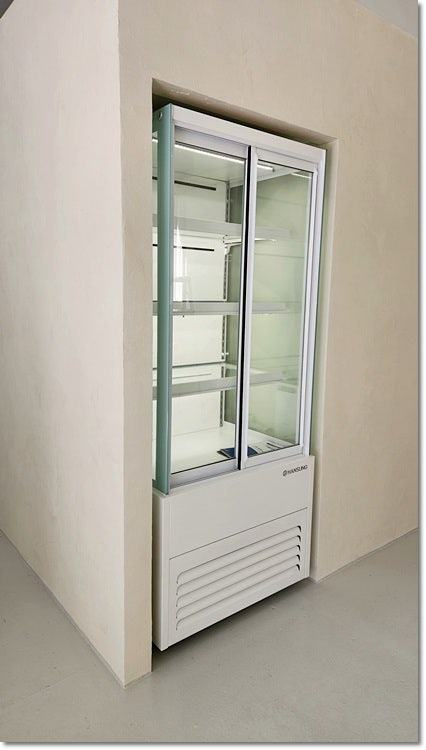
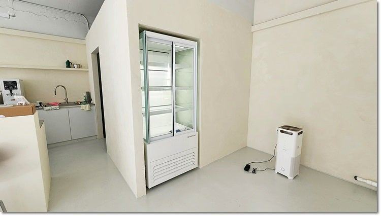
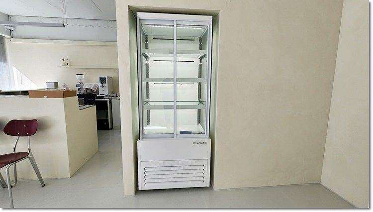
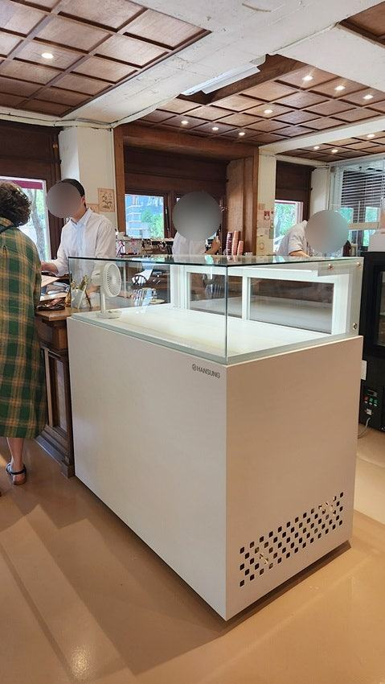
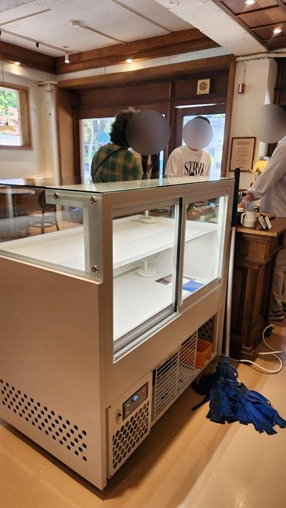

제과쇼케이스
제과쇼케이스 견적, 상담 전에 준비하면 빨라지는 정보

제과쇼케이스 견적을 정확하게 받으려면 설치 자리의 가로·깊이·높이, 주로 진열할 제품과 높이, 손님이 꺼내는지 직원이 꺼내는지, 원하는 프레임 색과 조명, 반입 경로를 미리 정리해 두시면 됩니다. 이 정보가 빠지면 견적이 대략적으로 나오고, 현장 방문 뒤 사양과 금액이 바뀌는 일이 생깁니다.
안녕하세요. 제과점과 디저트 카페의 쇼케이스를 상담부터 설치까지 직접 맡는 한성쇼케이스입니다.
제과점 오픈을 앞두고 여러 곳에 견적을 요청하셨는데, 돌아온 답이 "사이즈가 어떻게 되세요?", "어떤 걸 진열하세요?" 같은 질문뿐이라 답답하셨던 적 있으시죠.
맞춤 제작은 정보가 있어야 금액이 나오는 구조라 그렇습니다.
반대로 처음부터 필요한 정보를 정리해서 문의하시면 한두 번의 통화로 구체적인 구성과 견적을 받아 보실 수 있습니다.
여러 업체를 같은 조건으로 비교하기도 쉬워집니다.
오늘은 제과쇼케이스 견적을 요청하기 전에 준비해 두면 좋은 정보를 순서대로 정리해 드리겠습니다. 인테리어 도면이 아직 확정되지 않았더라도 정할 수 있는 것부터 채워 보세요.
1. 설치 자리 치수와 사진
가장 먼저 필요한 건 쇼케이스가 들어갈 자리의 가로, 깊이, 높이입니다. 카운터 안에 넣는지, 벽에 붙이는지, 단독으로 세우는지도 함께 알려 주세요.
주변 기둥, 콘센트, 창문 위치를 찍은 사진이 있으면 훨씬 정확해집니다.
인테리어가 진행 중이라면 도면 한 장이면 충분합니다. 쇼케이스 자리 옆에 오븐이나 커피 머신이 오는지도 표시해 주시면 열과 습기를 고려한 사양을 함께 제안해 드릴 수 있습니다.
- 가로·깊이·높이를 실측해 두세요.
- 자리 주변 사진과 콘센트 위치를 찍어 두세요.
2. 진열할 제품과 운영 방식
홀케이크, 조각 케이크, 마카롱, 타르트, 식빵처럼 주로 진열할 제품을 알려 주세요. 제품 높이에 따라 선반 단수와 간격이 정해지고, 생크림 제품이 많은지 상온 구움과자가 많은지에 따라 냉장 구역과 상온 구역 구성이 달라집니다.
손님이 앞에서 직접 꺼내는지, 직원이 뒤에서 꺼내 주는지도 중요합니다. 앞문형, 뒷문형, 양문형, 슬라이딩 문 중 무엇을 쓰느냐에 따라 구조가 바뀌기 때문입니다.
좁은 카운터라면 문이 열릴 때 공간을 덜 차지하는 슬라이딩 방식이 편할 수 있습니다.


3. 외관과 조명 취향
프레임 색상과 소재, 유리 모양, 조명 색을 미리 생각해 두시면 상담이 빨라집니다. 매장 인테리어 사진이나 마음에 드는 쇼케이스 사진을 몇 장 보내 주시는 것만으로도 방향을 잡기 쉽습니다.
흰 빵과 케이크가 많다면 화이트 프레임에 주백색 조명처럼 깔끔한 조합을, 초콜릿이나 구움과자가 주력이라면 따뜻한 색 조명을 고려해 볼 수 있습니다.
결정이 어렵다면 상담 때 여러 스타일을 비교해 보시고 정하셔도 됩니다.
4. 반입 경로와 일정
출입문 폭, 계단이나 엘리베이터 여부, 차량을 댈 수 있는 위치를 알려 주세요. 반입이 어려운 구조라면 분리 제작이나 추가 인력이 필요할 수 있어, 미리 알아야 견적이 나중에 바뀌지 않습니다.
오픈 예정일도 함께 알려 주세요. 맞춤 제작은 제작 기간이 필요해 인테리어 마감 일정과 맞춰 설치 날짜를 잡아야 합니다.
- 출입문 폭과 계단·엘리베이터 여부를 확인하세요.
- 오픈 예정일을 함께 알려 주세요.
체크리스트
- 설치 자리 치수와 주변 사진
- 주력 진열 제품과 높이
- 앞문·뒷문·양문·슬라이딩 중 문 방식
- 프레임 색과 조명 색
- 출입문 폭과 반입 경로
- 오픈 예정일
현장 방문 상담 후 화이트톤으로 결정한 제과점 쇼케이스
제과점 오픈을 준비하시던 사장님과 먼저 상담을 진행한 뒤, 실제 현장에 방문해 사이즈와 주변 인테리어, 매장 분위기를 확인하고 사용 목적에 맞는 쇼케이스를 여러 스타일로 제안해 드렸습니다.
깔끔한 분위기를 원하셔서 최종적으로 화이트톤 제품으로 결정하셨습니다.
처음에는 비용 부담 때문에 중고 쇼케이스도 생각하셨는데, 상담을 거쳐 새 제품을 직접 제작해 설치하는 쪽으로 정하셨습니다.
출고부터 배송, 설치까지 전문 인력이 함께해 설치 과정에서 생길 수 있는 문제를 미리 막았습니다.







자주 묻는 질문
전화나 메시지만으로도 견적을 받을 수 있나요?
치수와 사진, 진열 제품 정보가 있으면 대략적인 구성과 견적을 먼저 안내해 드릴 수 있습니다. 확정 전에는 현장 확인을 거쳐 사양을 맞춥니다.
여러 업체 견적을 비교할 때 무엇을 맞춰야 하나요?
같은 치수, 같은 문 방식, 같은 냉각 방식과 유리 사양으로 요청해야 비교가 됩니다. 조명, 선반, 배송·설치 포함 여부도 항목별로 확인해 보세요.
직접 보고 결정할 수 있는 곳이 있나요?
공장에 방문하시면 샘플을 직접 보며 상담하실 수 있습니다. 방문 전에 대표전화 031-986-2458로 연락 주시면 일정을 맞춰 드립니다.
매장 조건에 맞춰 만드는 한성쇼케이스
원하시는 제품 사진과 설치할 공간 사진만 보내 주셔도 매장에 맞는 구성을 추천해 드립니다.
- 전국 240여 개 A/S 전담 센터 운영
- 본사 대량 자재 매입으로 품질 대비 합리적인 가격
- 유럽제·삼성 냉각 콤프레셔 적용
- 국내 최초 쇼케이스 전문 디자이너 상주
매장 폭과 원하는 진열 구성을 알려 주세요. 실측과 견적을 안내해 드립니다.
031-986-2458